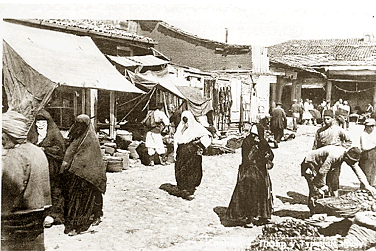

Σκόπια 1916 - 1917 πανόραμα 1
Έγγραφα από τους Βαλκανικούς πολέμους
- Έτος
- 1916-1917
- Διάρκεια
- 00:11

Αγωγιάτες στην αγορά των Σκοπίων κάτω από το φρούριο, απέναντι από το τουρκικό ταχυδρομείο. Πίσω δεξιά φαίνονται το Τζαμί του Μουσταφά Πασά και το ταχυδρομείο. (19ος αιώνας)

Αγορά στα Σκόπια στον χώρο μπροστά στο Χουκουμάτ (δημαρχείο) και το τουρκικό ταχυδρομείο - 1902. Στο βάθος αριστερά ο στρατώνας. (τέλη του 19ου αιώνα)

Μέρα αγοράς στα Σκόπια μπροστά στο Χουκουμάτ (δημαρχείο) και το τουρκικό ταχυδρομείο το 1902. Πίσω το Τζαμί του Μουσταφά Πασά.

Η αγορά των Σκοπίων κάτω από το φρούριο - 19ος αιώνας.

Η αγορά των Σκοπίων κάτω από το φρούριο - 19ος αιώνας.

Αγωγιάτες στην πλατεία της πόλης - 19ος αιώνας.

Αγορά στα Σκόπια στον χώρο μπροστά στο Χουκουμάτ (δημαρχείο) και το τουρκικό ταχυδρομείο - 1902. Στο βάθος φαίνεται ο στρατώνας.

Μπιτ Παζάρ, αγορά αγροτικών προϊόντων. Στο βάθος το Τζαμί του Ισχάκ Μπέη και το τουρμπέ. (τέλη του 19ου, αρχές του 20ού αιώνα)

Μπιτ Παζάρ, τέλη του 19ου αιώνα.

Αγορά στο παλιό παζάρι - τέλη του 19ου αιώνα.

Μπιτ Παζάρ. Στο βάθος το Τζαμί του Ισχάκ Μπέη και το τουρμπέ.
- 19ος αιώνας.

Μπιτ Παζάρ. Στο βάθος το Τζαμί του Ισχάκ Μπέη και το τουρμπέ.
- 19ος αιώνας.

Τμήμα του Μπιτ Παζάρ - αγορά κεραμικών.
(αρχές του 20ού αιώνα)

Αστοί και χωρικοί στο Μπιτ Παζάρ - στιγμιότυπο από τις μέρες της αγοράς (αρχές του 20ού αιώνα)

Πωλητής πατάτας - στιγμιότυπο από τις μέρες της αγοράς
(περίπου 1930)

Μπιτ Παζάρ - Δεκαετία του 1920.

Μπιτ Παζάρ - Δεκαετία του 1950.

Μπιτ Παζάρ - Δεκαετία του 1950.

Έγγραφα από τους Βαλκανικούς πολέμους
 Υδραγωγείο4 καρτ-ποστάλ
Υδραγωγείο4 καρτ-ποστάλ Καλέ30 καρτ-ποστάλ
Καλέ30 καρτ-ποστάλ Γέφυρες60 καρτ-ποστάλ
Γέφυρες60 καρτ-ποστάλ Προκυμαία58 καρτ-ποστάλ
Προκυμαία58 καρτ-ποστάλ Πλατεία46 καρτ-ποστάλ
Πλατεία46 καρτ-ποστάλ Κτίρια66 καρτ-ποστάλ
Κτίρια66 καρτ-ποστάλ Χριστιανικοί ναοί19 καρτ-ποστάλ
Χριστιανικοί ναοί19 καρτ-ποστάλ Μουσουλμανικά κτίρια33 καρτ-ποστάλ
Μουσουλμανικά κτίρια33 καρτ-ποστάλ Λέσχη Αξιωματικών29 καρτ-ποστάλ
Λέσχη Αξιωματικών29 καρτ-ποστάλ Θέατρο28 καρτ-ποστάλ
Θέατρο28 καρτ-ποστάλ Σιδηροδρομικός σταθμός13 καρτ-ποστάλ
Σιδηροδρομικός σταθμός13 καρτ-ποστάλ Σχολεία36 καρτ-ποστάλ
Σχολεία36 καρτ-ποστάλ Πάρκα12 καρτ-ποστάλ
Πάρκα12 καρτ-ποστάλ Αγορές18 καρτ-ποστάλ
Αγορές18 καρτ-ποστάλ Δρόμοι38 καρτ-ποστάλ
Δρόμοι38 καρτ-ποστάλ Πανόραμα I60 καρτ-ποστάλ
Πανόραμα I60 καρτ-ποστάλ Πανόραμα II30 καρτ-ποστάλ
Πανόραμα II30 καρτ-ποστάλ Κολάζ55 καρτ-ποστάλ
Κολάζ55 καρτ-ποστάλ Πλημμύρες9 καρτ-ποστάλ
Πλημμύρες9 καρτ-ποστάλ Σεισμός27 καρτ-ποστάλ
Σεισμός27 καρτ-ποστάλ Σκόπια 200026 καρτ-ποστάλ
Σκόπια 200026 καρτ-ποστάλ